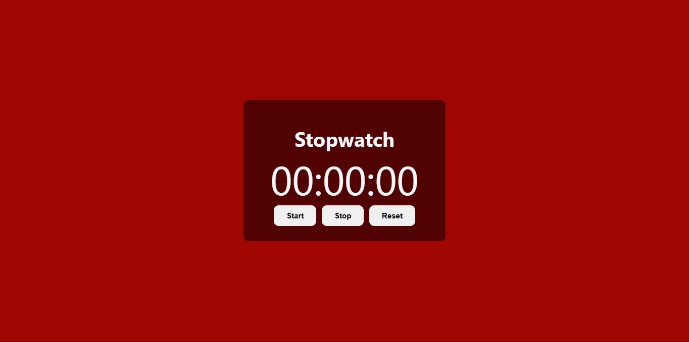
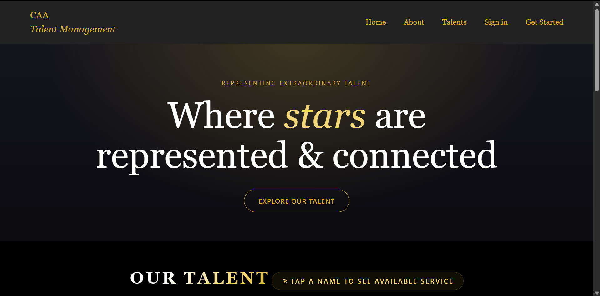
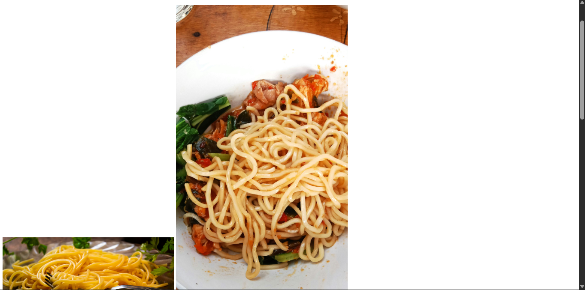

Hi, I'm David, a student building my way into software engineering.
I'm currently studying software engineering and spending my free time building real, working applications from scratch. No professional job yet, just consistent practice, curiosity, and a growing list of personal projects.

About me
My name is David Itiung. I'm passionate about learning web development and creating simple, effective designs. I enjoy solving problems and building things that make everyday tasks a little easier, that's what pulled me into programming in the first place, and it's what keeps me building outside of class.
I don't have a formal work history yet. What I do have is a habit of finishing what I start: every project below was built and deployed live by me.
Hobbies
- Coding — building small projects and experimenting with new languages and tools.
- Reading — books on personal development and technology.
Aspiration
To become a professional software engineer, building applications that solve real problems and encourage others to pursue technology with the same excitement I have for it.
Why you should choose me
I'm early in my journey and looking for exactly this kind of structured, hands-on environment to grow faster than I could on my own.
Self-taught through personal projects — four shipped and deployed so far, covering front-end logic, UI, and working with localstorage.
I'm looking for a role I can fully commit to for the program's full one-year mentorship, not a short-term commitment.
I am based in Abuja and able to commute.
Projects

Stopwatch
A working browser stopwatch built with vanilla JavaScript — start, stop, and reset logic, with a clean, distraction-free interface.
View live project →
Todo Application
A task manager for adding, completing, and removing to-dos, with state handled entirely in the browser and a simple, usable layout.
View live project →
CAA Application
A Celebrity App for managing and showcasing information about famous individuals.
View live project →
My Recipe Project
A simple recipe app for storing and managing favorite recipes with a clean, user-friendly interface.
View live project →Education
Diploma in Software Engineering
AltSchool Africa
Specialized, hands-on training in software development and computing fundamentals.
BS.c in Computer Software Engineering
Miva Open University
Pursuing higher education alongside the AltSchool Africa diploma, building a strong academic foundation to go with practical project work.
Let's talk
I'd welcome the chance to bring this energy to the Mshel IT Young Professionals Program. Reach out any time.